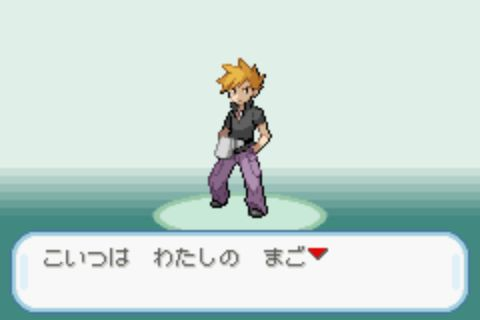

Pokemon Fire Red

Information
This is where we start.
I decided for this game for a few reasons.
- It's Pokemon, so it's pretty popular and appealing as a starting point.
- There's a good chance that you at least played the beginning of a Pokemon game, and they are all the same.
- It's in Hiragana.
Now, I wondered how to deal with Hiragana for this course.
I considered going to Kanji directly, but I though that making at least one game in hiragana would be a good idea to at least show the contrast between kana and Kanji.
The second reason is that I'm only going to cover a few new words per game.
For this game we are going to focus mostly on particle, which are in kana.
There's also some vocabulary, but again, I picked sentences containing words that are usually written in kana anyway.
Vocabulary
- はじめる (はじめる) - to start
- わたし (私) - I, me
- なまえ (名前) - name
- きみ (君) - you, buddy, pal
- こいつ - he, she, this fellow, this guy, this person
- ここ - here
- こんにちは - hello, good day
- くん (君) - Mr (junior); master; boy
Grammar
- の - indicates possessive
- は - topic marker particle
- だ - Copula be, is
- た - Auxiliary verb, indicates past
- かな - Ending Particle, I wonder
Lesson
はじめまして！
Hello, there! Glad to meet you!

はじめまして is actually the て-Form and polite form of the verb 始める (to start, to begin).
It's used as a greeting: "Hello" or "Nice to meet you".
わたしの なまえは (オーキド)
My name is Oak.

わたし means "I" or "me".
なまえ means "name".
の is a particle. Here it means that なまえ belongs to わたし. You can translate by " 's ".
So わたしの なまえ means "I's name". So "my name". You also think of it as "name of I".
オーキド is the name of the character. You'll notice that it's written in Katakana.
That will be the case for other characters but also Pokemon names in the game.
Since we have "My name は Oak", you may think that it means "My name is Oak".
So does は means "is" ?
It doesn't. Never.
However, most of the time that's how it's translated in english.
Here's what's actually going on.
は is the topic particle.
It doesn't change the information about what's happening in the sentence, it only tells us what we're focusing on.
は tells us what is the topic, not what is the subject of the sentence.
The real traduction is "as for".
"As for my name, Oak."
The subject of the sentence is actually omitted because we don't need it to understand.
The subject is "it's".
"As for my name, (it's) Oak."
きみの なまえは？
Let's begin with your name. Whats is it?

きみ means you. の works like 's in english.
We saw that わたしの なまえ means "my name" or "name of I".
So きみの なまえ means "name of you", so "your name".
は is the topic particle.
It means we want to talk about what's before it.
We want to talk about "きみの なまえ", "your name".
When the sentence ends with "は？" it means we are asking a question about it.
So: "Your name ...?"
We do the same thing in english for asking name.
If I say "I'm Jo. And you are ..."
We understand that I'm not about to say something about you. I'm asking for your name.
Sometimes the question mark will not be there, but the sentence works the same way.
こいつは わたしの まご
This is my grandson.
こいつ is a casual way of saying "this person".
Okido is actually very casual.
Since there's no gender, こいつ can be about a guy or a girl.
こいつは means we are talking about こいつ.
As for this person.
まご means "grandchild".
As before, わたしの means "my", so " わたしの まご " means "my grandchild".
As for this person, my grandchild.
グリーン だった かな
…Er, was it GREEN?
グリーン means Green. That's the name of the character.
What about だったかな ?
Let's break it down.
We have the copula だ. It states that something is.
グリーン だ could be a complete copula sentence meaning A is B.
If you look back to the previous we could say: こいつが グリーン だ.
Aが Bだ means A is B. But we don't really need the first part to understand the sentence, so we don't say it. You can think of it as "it's" in english. A zero prounoun in japanese.
So グリーン だ means "it's Green".
だった is the past form of the copula.
た usually indicates the verb, or い-adjective or copula is in the past tense.
グリーン だった, "It was Green."
かな means "I wonder".
It's a particle, like は, が or の. But it's a sentence ending particle.
It's actually two sentence ending particle:
- か turns a sentence into a question.
- な can mean a lot of things, but in this case, it's asking for confirmation.
So かな, is a bit like a question tag in english. "Isn't it ?"
グリーン だったかな ?
It was Green wasn't it ?
It's important to note than even if a sentence ends with a dot instead of a question mark, it would still be exactly the same. Still a question, because it ends in か(な).
ここは (レッド)の いえ
RED's House.

ここ means here.
こ, そ, あ and ど (called Kosoado) is a pattern that you'll see often in japanese.
The first three are relative to a distance (can be abstract), and the last one for a question.
ここ: here
そこ: there
あそこ: over there
どこ: where ?
レッド is our name, the name of the character.
いえ means house.
レッド のいえ means "Red's house" or "House of Red".
ここは レッド のいえ
As for here, Red's house
(ナナミ)「こんにちは (レッド)くん！
Hi, RED!
Last card of Pokemon Fire Red with two words you problably already know.
こんにちは means "Hello" or "Hi".
くん is a suffix we give to young boys.
Calling me "レッド" would be impolite, so "レッドくん".
ちゃん is the suffix for girl.
ナナミ is Nanami. It's the name of character talking.